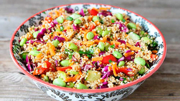

Recetas Saludables
En esta seccion encontraras todo tipo de recetas saludables para hacer en casa, desde ensaladas hasta recetas con pollo, siempre manteniendose saludables.
Ensalada de quinoa y vegetales
En un tazón grande, mezcla la quinoa cocida con las verduras cortadas en trozos pequeños. Agrega las nueces picadas. En un recipiente aparte, mezcla el jugo de limón, el aceite de oliva, la sal y la pimienta para hacer el aderezo. Vierte el aderezo sobre la ensalada y mezcla bien. ¡Sirve y disfruta!
- 1 taza de quinoa cocida
- Verduras frescas al gusto (como pepino, tomate, espinacas)
- 1/4 taza de nueces picadas
- 2 cucharadas de jugo de limón
- 2 cucharadas de aceite de oliva extra virgen
- Sal y pimienta al gusto
Salmón al horno con espárragos
Precalienta el horno a 200°C. Coloca los filetes de salmón y los espárragos en una bandeja para hornear. Riega con un poco de aceite de oliva y sazona con sal y pimienta al gusto. Si lo deseas, coloca algunas rodajas de limón sobre el salmón. Hornea durante 12-15 minutos o hasta que el salmón esté cocido y los espárragos estén tiernos. ¡Sirve caliente!
- Filetes de salmón fresco
- Espárragos frescos
- Aceite de oliva
- Sal y pimienta al gusto
- Rodajas de limón (opcional)
Pechugas de pollo a la parrilla con vegetales asados
.jpg)
Precalienta la parrilla o el horno a una temperatura media-alta. Corta los vegetales en trozos medianos y colócalos en una bandeja para hornear. Riega los vegetales con un poco de aceite de oliva y sazona con sal y pimienta al gusto. También puedes espolvorear hierbas frescas si lo deseas. Coloca las pechugas de pollo en la parrilla o en otra bandeja para hornear separada, y sazona con sal y pimienta al gusto. Cocina las pechugas de pollo y los vegetales asados durante unos 15-20 minutos, volteando las pechugas a la mitad del tiempo de cocción, hasta que el pollo esté bien cocido y los vegetales estén tiernos y ligeramente dorados. Retira del fuego y sirve las pechugas de pollo acompañadas de los vegetales asados. Puedes agregar un poco más de sal y pimienta si es necesario. ¡Disfruta de esta comida saludable y deliciosa!
- Pechugas de pollo deshuesadas y sin piel
- Vegetales variados para asar (como zanahorias, calabacines, etc)
- Aceite de oliva
- Sal y pimienta al gusto
- Hierbas frescas (como romero o tomillo)
Wraps de verduras asadas
Precalienta el horno a 200°C. Corta las verduras en tiras o trozos medianos y colócalas en una bandeja para hornear. Rocía las verduras con un poco de aceite de oliva y sazona con sal y pimienta al gusto. Hornea las verduras durante unos 20-25 minutos, o hasta que estén tiernas y ligeramente doradas. Calienta las tortillas en una sartén o en el microondas según las instrucciones del paquete. Para armar los wraps, coloca una capa de hojas de lechuga o espinacas en el centro de cada tortilla. Agrega las verduras asadas encima de las hojas de lechuga o espinacas. Si lo deseas, puedes añadir rodajas de aguacate y una cucharada de hummus o salsa de yogur. Envuelve los wraps y sírvelos inmediatamente. ¡Disfruta de esta deliciosa comida saludable y llena de sabor!
- Tortillas de trigo integral o de maíz
- Verduras variadas para asar
- Aceite de oliva
- Sal y pimienta al gusto
- Hojas de lechuga o espinacas frescas
- Aguacate en rodajas (opcional)
- Hummus o salsa de yogur (opcional)